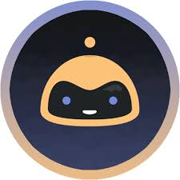

-
Time allocated for the last question has expired. Bot will automatically move to the next question.{{message.timestamp | date : 'h:mm:ss a' }}
{{ message.response.result.resolvedQuery }}
-
Laura {{message.timestamp | date : 'h:mm:ss a' }}
{{ message.response.result.fulfillment.speech }}
{{s.title}}
{{message.remainingTime}}